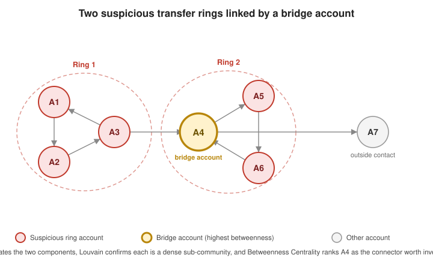

Use Cases and Algorithms in Practice
|
This content was generated with the assistance of AI and should be verified against the official documentation before being relied on in production. |
The preceding pages cover pathfinding, centrality, community detection and APOC one algorithm at a time. This page turns that catalog around and starts from five recurring business problems, showing which algorithms combine to solve each one and why that combination — rather than any single algorithm in isolation — is what actually answers the question.
Each scenario below was run on a Neo4j server with GDS and APOC installed (see Graph Data Science Fundamentals for the one-line Docker setup); the outputs shown are the real ones. The scenarios deliberately use a handful of nodes so every number can be checked by hand.
Recommendation engines
A recommendation is, structurally, "find people similar to this one and suggest what they have that this one does not." Node Similarity computes a pairwise similarity score (Jaccard by default) between nodes that share neighbors — here, people who watched overlapping sets of movies — and Filtered Node Similarity narrows that computation to a chosen source set instead of scoring every pair in the graph, which is the practical form to reach for once the graph is large enough that an all-pairs comparison would be wasteful.
CREATE (ada:Person {name: 'Ada'})
CREATE (bo:Person {name: 'Bo'})
CREATE (cy:Person {name: 'Cy'})
CREATE (di:Person {name: 'Di'})
CREATE (m1:Movie {title: 'Nine Lives'})
CREATE (m2:Movie {title: 'Red Horizon'})
CREATE (m3:Movie {title: 'Glass Orchard'})
CREATE (m4:Movie {title: 'Paper Moon'})
CREATE (ada)-[:WATCHED]->(m1)
CREATE (ada)-[:WATCHED]->(m2)
CREATE (bo)-[:WATCHED]->(m1)
CREATE (bo)-[:WATCHED]->(m2)
CREATE (bo)-[:WATCHED]->(m3)
CREATE (cy)-[:WATCHED]->(m3)
CREATE (cy)-[:WATCHED]->(m4)
CREATE (di)-[:WATCHED]->(m1)
CREATE (di)-[:WATCHED]->(m4)
CALL gds.graph.project(
'watch-history',
['Person', 'Movie'],
{WATCHED: {orientation: 'UNDIRECTED'}}
)// Movies watched by the people most similar to Ada that Ada has not seen yet
MATCH (ada:Person {name: 'Ada'})
CALL gds.nodeSimilarity.filtered.stream('watch-history', {
sourceNodeFilter: [ada]
})
YIELD node2, similarity
WITH ada, gds.util.asNode(node2) AS similarPerson, similarity
ORDER BY similarity DESC
LIMIT 10
MATCH (similarPerson)-[:WATCHED]->(recommendation:Movie)
WHERE NOT (ada)-[:WATCHED]->(recommendation)
RETURN recommendation.title AS movie, round(sum(similarity) * 1000) / 1000.0 AS score
ORDER BY score DESC
LIMIT 5Run in two stages, the pipeline is easy to follow. The similarity step returns Bo (0.667: two shared films out of the
three Bo watched) and Di (0.333: one shared film, Nine Lives, out of the three distinct films in the union). The
recommendation step then looks only at what those neighbors watched and Ada has not:
movie, score
"Glass Orchard", 0.667
"Paper Moon", 0.333Glass Orchard comes from Bo, the most similar viewer, and Paper Moon from Di; summing similarity over every
similar viewer who watched a film lets a title endorsed by several moderately similar people outrank one endorsed by
a single strongly similar person. Note that ada is carried through the WITH: a variable that is not listed in a
WITH is out of scope afterwards, and the later NOT (ada)-[:WATCHED]->(recommendation) pattern would be rejected.
K-Nearest Neighbors (KNN) solves the same problem approximately but scales further, since it avoids comparing every pair outright. See Filtered Node Similarity and K-Nearest Neighbors. A dedicated treatment of recommendation-engine patterns built on similarity algorithms exists — see the bibliography.
See Opportunity Detection & Recommendations for the Spring Boot implementation of this scenario: a scheduled Filtered Node Similarity job, a cached recommendation endpoint, link prediction and warm introductions.
Fraud and AML ring detection
A single account rarely reveals fraud on its own; the signal is structural — a tight loop of accounts moving money between each other, plus one or two accounts that sit between that loop and the rest of the graph. Three algorithms, layered in order, surface that structure: WCC first cuts the whole transaction graph down to the connected pieces worth examining at all, Louvain then finds dense sub-communities inside each piece (a plausible laundering ring), and Betweenness Centrality ranks the accounts that bridge separate communities — the accounts most likely to be moving funds between rings rather than transacting normally within one. The first two are covered in Community Detection Algorithms and the third in Pathfinding and Centrality Algorithms.

CREATE (a1:Account {id: 'A1'})
CREATE (a2:Account {id: 'A2'})
CREATE (a3:Account {id: 'A3'})
CREATE (a4:Account {id: 'A4'})
CREATE (a5:Account {id: 'A5'})
CREATE (a6:Account {id: 'A6'})
CREATE (a7:Account {id: 'A7'})
CREATE (a1)-[:TRANSFER {amount: 5000}]->(a2)
CREATE (a2)-[:TRANSFER {amount: 4800}]->(a3)
CREATE (a3)-[:TRANSFER {amount: 4600}]->(a1)
CREATE (a3)-[:TRANSFER {amount: 4000}]->(a4)
CREATE (a4)-[:TRANSFER {amount: 3900}]->(a5)
CREATE (a5)-[:TRANSFER {amount: 3800}]->(a6)
CREATE (a6)-[:TRANSFER {amount: 3700}]->(a4)
CREATE (a4)-[:TRANSFER {amount: 1500}]->(a7)
CALL gds.graph.project(
'transfers',
'Account',
{TRANSFER: {orientation: 'UNDIRECTED'}}
)CALL gds.wcc.stream('transfers')
YIELD nodeId, componentId
RETURN gds.util.asNode(nodeId).id AS account, componentId
ORDER BY componentId;
CALL gds.louvain.stream('transfers')
YIELD nodeId, communityId
RETURN gds.util.asNode(nodeId).id AS account, communityId
ORDER BY communityId;
CALL gds.betweenness.stream('transfers')
YIELD nodeId, score
RETURN gds.util.asNode(nodeId).id AS account, score AS bridgeScore
ORDER BY bridgeScore DESC
LIMIT 5;Against the seven accounts above the real output is:
-- WCC
A1..A7 all in componentId 0
-- Louvain
A1, A2, A3 -> communityId 1
A4, A5, A6, A7 -> communityId 5
-- Betweenness
A4, 11.0
A3, 8.0
A2, 0.0
A5, 0.0
A1, 0.0WCC returns one component, so the whole graph is a single connected piece worth examining. Louvain splits it into
the two rings — A1, A2, A3 and A4 to A6 — and attaches the outside contact A7 to the second ring,
because A7 hangs off A4. Betweenness ranks A4 first with 11.0 and A3 second with 8.0: they are the two
ends of the single transfer A3 to A4 that joins the rings. A4 outranks A3 because it also carries the path to
A7. An investigator would read that as start with A4 and A3, the accounts that move funds between
communities rather than within one. Leiden (gds.leiden.stream with a randomSeed) produced the same two
communities here, as expected on such a small graph.
See Weakly Connected Components, Louvain and Betweenness Centrality. A dedicated treatment of graph-based fraud and anti-money-laundering detection exists — see the bibliography.
See Fraud Detection for the Spring Boot implementation of this scenario: Spring Data Neo4j mapping, batch GDS jobs, a real-time payment check and a Testcontainers test.
Routing and logistics optimization
Vehicle routing and delivery scheduling reduce, at the core, to weighted shortest-path search over a location graph — exactly the problem Pathfinding and Centrality Algorithms covers in depth with Dijkstra, A* and Yen’s algorithm. The only addition a logistics scenario brings is framing: the source node is a depot, the target is a delivery address, and the weight is distance, drive time, or a cost blend of both.
// Route a delivery from the depot to a customer over the projected road
// network (see Pathfinding and Centrality Algorithms for how 'roads' is built)
MATCH (depot:Location {name: 'Turin'}), (customer:Location {name: 'Florence'})
CALL gds.shortestPath.dijkstra.stream('roads', {
sourceNode: depot,
targetNode: customer,
relationshipWeightProperty: 'distance'
})
YIELD totalCost, nodeIds
RETURN totalCost AS totalDistanceKm,
[nodeId IN nodeIds | gds.util.asNode(nodeId).name] AS routetotalDistanceKm, route
450.0, ["Turin", "Milan", "Bologna", "Florence"]The roads graph here is the one built, with coordinates, in
Pathfinding and Centrality Algorithms. Real routing adds
constraints that the plain weighted shortest path does not model — time windows, vehicle capacity, several stops — which is vehicle-routing territory beyond GDS; but the building block, "cheapest path between two places", is
exactly this query, and a cost that blends distance and time is just a computed relationship property projected as
the weight.
When the location graph carries real latitude/longitude properties, A* reaches the same optimal route
while visiting fewer nodes on a large, geographically spread network, and Yen’s algorithm returns several
ranked alternative routes instead of only the single best one — useful for offering a backup route or
avoiding a closed road without recomputing from scratch. See
Dijkstra Source-Target
and A* Shortest Path.
See Logistics & Supply Chain for the Spring Boot implementation of this scenario: route services over a road network, the nearest warehouse with stock and a scheduled bottleneck job.
Identity and access graphs (entity resolution)
Know-your-customer (KYC) and identity-and-access-management pipelines routinely ingest the same real-world
person or account more than once, through different onboarding channels, spellings, or upstream systems.
Deduplicating that graph is a two-step process: a Cypher query flags candidate duplicates by some
blocking key (a normalized name plus date of birth, here), and
apoc.refactor.mergeNodes — covered in
APOC and the Extension Ecosystem — then folds each confirmed
duplicate pair into a single node, combining their properties and re-pointing every relationship instead of
leaving orphaned duplicate identities behind.
// Candidate duplicates: same normalized name and date of birth, ingested from
// two different onboarding channels
MATCH (i1:Identity), (i2:Identity)
WHERE id(i1) < id(i2)
AND toLower(i1.fullName) = toLower(i2.fullName)
AND i1.dob = i2.dob
WITH i1, i2
CALL apoc.refactor.mergeNodes([i1, i2], {
properties: 'combine',
mergeRels: true
})
YIELD node
RETURN nodeTo see it work, create the same person ingested twice — once through the web and once at a branch — each holding an account:
CREATE (:Identity {fullName: 'Alice Smith', dob: '1990-01-01', channel: 'web'}),
(:Identity {fullName: 'ALICE SMITH', dob: '1990-01-01', channel: 'branch'}),
(:Identity {fullName: 'Bob Jones', dob: '1985-05-05', channel: 'web'});
MATCH (a:Identity {channel: 'web', fullName: 'Alice Smith'}) CREATE (a)-[:HOLDS]->(:Account {iban: 'ES01'});
MATCH (a:Identity {channel: 'branch'}) CREATE (a)-[:HOLDS]->(:Account {iban: 'ES02'});After the merge query above, the result is a single node and both accounts are attached to it:
fullName, channel, accounts
["Alice Smith", "ALICE SMITH"], ["web", "branch"], 2properties: 'combine' turned the differing scalar values into arrays, so no information was lost and a reviewer can
see the variants that were reconciled, and mergeRels: true re-pointed the two HOLDS relationships. Bob Jones, who
matched nothing, is untouched. The merge is destructive — the original nodes are gone — so a production pipeline
writes the candidate pairs to a review queue first, or records the merge as a SAME_AS relationship until it is
approved. For fuzzy blocking keys, APOC’s text functions help score candidates: apoc.text.levenshteinSimilarity('Alice
Smith', 'Alise Smith') returns about 0.91.
A blocking key this loose still needs a human or a scoring model in the loop before merging in production — treat the query above as the candidate-generation step, not the final decision. See apoc.refactor.mergeNodes. A dedicated treatment of entity resolution over graphs exists — see the bibliography.
See Identity Resolution & KYC and Graph-Based Access Control for the Spring Boot implementations of the entity-resolution and the access-graph halves of this scenario.
Root-cause and dependency analysis
Service-dependency graphs answer three closely related but distinct questions, each needing a different
technique over the same :Service-[:DEPENDS_ON]-:Service graph.
CREATE (gateway:Service {name: 'gateway'})
CREATE (auth:Service {name: 'auth'})
CREATE (orders:Service {name: 'orders'})
CREATE (inventory:Service {name: 'inventory'})
CREATE (billing:Service {name: 'billing'})
CREATE (notifications:Service {name: 'notifications'})
CREATE (gateway)-[:DEPENDS_ON]->(auth)
CREATE (gateway)-[:DEPENDS_ON]->(orders)
CREATE (orders)-[:DEPENDS_ON]->(auth)
CREATE (orders)-[:DEPENDS_ON]->(inventory)
CREATE (orders)-[:DEPENDS_ON]->(billing)
CREATE (billing)-[:DEPENDS_ON]->(auth)
CREATE (notifications)-[:DEPENDS_ON]->(auth)
CALL gds.graph.project(
'services',
'Service',
{DEPENDS_ON: {orientation: 'NATURAL'}}
)Blast radius. Given a service that just started failing, which other services will eventually break? That is every service that transitively depends on it — a variable-length traversal followed upstream:
// Every service an `auth` outage would eventually break
MATCH (impacted:Service)-[:DEPENDS_ON*1..]->(failing:Service {name: 'auth'})
RETURN DISTINCT impacted.name AS impactedServiceThe query returns billing, gateway, notifications and orders — every service except auth itself and inventory,
which has no path to auth.
Single points of failure. The same Betweenness Centrality used to find bridge accounts above finds bridge services: a service with a high score sits on many dependency paths between other services.
CALL gds.betweenness.stream('services')
YIELD nodeId, score
RETURN gds.util.asNode(nodeId).name AS service, score
ORDER BY score DESC, service
LIMIT 5service, score
"orders", 2.0
"auth", 0.0
"billing", 0.0
"gateway", 0.0
"inventory", 0.0Betweenness crowns orders — the only service that sits between two others (gateway and inventory, gateway and
billing) — but gives auth a score of 0, even though an auth outage breaks four services. The reason is
direction: every dependency path ends at auth, and betweenness only counts nodes in the middle of a path, never
its endpoints. Betweenness therefore finds routing bottlenecks, not the most depended-upon services. For the latter,
count dependents, either with the blast-radius query or with degree centrality on the reversed projection:
CALL gds.degree.stream('services', {orientation: 'REVERSE'})
YIELD nodeId, score
RETURN gds.util.asNode(nodeId).name AS service, score AS dependents
ORDER BY dependents DESC, service
LIMIT 3service, dependents
"auth", 4.0
"billing", 1.0
"inventory", 1.0auth has four direct dependents, which is the real single point of failure; orders is the structural bridge.
Use both lenses: transit (betweenness) and fan-in (reverse degree or the blast radius).
Dependency-cycle validation. A healthy dependency graph should be acyclic; a cycle means two or more services depend on each other, directly or indirectly, and neither can safely start, deploy, or roll back independently. Strongly Connected Components finds exactly this: any component with more than one member is a cycle.
CALL gds.scc.stream('services')
YIELD nodeId, componentId
WITH componentId, collect(gds.util.asNode(nodeId).name) AS services
WHERE size(services) > 1
RETURN componentId, servicesOn the graph above this returns no rows — there is no cycle. Introduce one by making inventory and billing
depend on each other, re-project the graph, and the same query reports it:
MATCH (b:Service {name: 'billing'}), (i:Service {name: 'inventory'})
CREATE (i)-[:DEPENDS_ON]->(b)
CREATE (b)-[:DEPENDS_ON]->(i);componentId, services
4, ["inventory", "billing"]The component id is an arbitrary label; only the grouping matters. Run this check in CI after each deployment-topology change and fail the build on any non-empty result.
See Betweenness Centrality and Strongly Connected Components. A dedicated treatment of dependency-graph root-cause analysis exists — see the bibliography.
See Dependency & Impact Analysis for the Spring Boot implementation of this scenario: blast-radius and root-cause queries, Betweenness and Strongly Connected Components jobs, and a graph kept current from deployment events.
Tying it together
All five scenarios above are special cases of the same underlying pattern: model the domain as a property graph, project the relevant slice into GDS, and let similarity, community-detection, centrality or pathfinding algorithms surface structure that would otherwise take hand-rolled recursive queries or a separate graph-processing system to find. That is also exactly the toolbox behind general master-data-management and knowledge-graph programs — entity resolution to keep one canonical node per customer, product or organizational unit; community detection and centrality to understand how that canonical graph is actually connected; and weighted pathfinding wherever a canonical record needs a shortest or cheapest route to another. The five use cases above are simply that same toolbox applied to five concrete business questions.
The Spring Boot side of these scenarios — the application, repositories, Neo4jClient GDS calls and tests around the
algorithms — is built in the Neo4j Use Cases section of the
SpringBoot Reference.
See also Graph Data Science Fundamentals for the graph-projection groundwork every example on this page builds on.